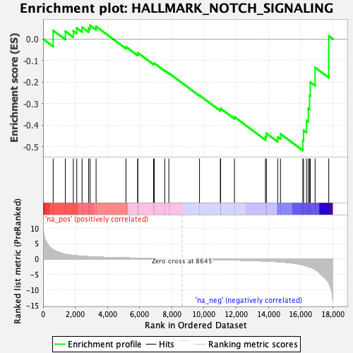
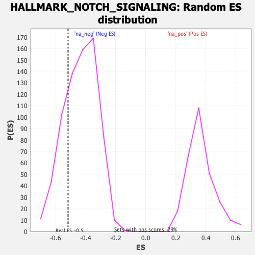

| | | Dataset | DE_genes2 |
| Phenotype | NoPhenotypeAvailable |
| Upregulated in class | na_neg |
| GeneSet | HALLMARK_NOTCH_SIGNALING |
| Enrichment Score (ES) | -0.51773053 |
| Normalized Enrichment Score (NES) | -1.1912911 |
| Nominal p-value | 0.23916084 |
| FDR q-value | 0.26716742 |
| FWER p-Value | 0.999 |
Table: GSEA Results Summary

Fig 1: Enrichment plot: HALLMARK_NOTCH_SIGNALING
Profile of the Running ES Score & Positions of GeneSet Members on the Rank Ordered List
| SYMBOL | RANK IN GENE LIST | RANK METRIC SCORE | RUNNING ES | CORE ENRICHMENT | | 1 | DTX4 | 628 | 3.002 | 0.0399 | No |
| 2 | FZD5 | 1386 | 1.540 | 0.0362 | No |
| 3 | SKP1 | 1881 | 1.149 | 0.0373 | No |
| 4 | ST3GAL6 | 2094 | 1.028 | 0.0512 | No |
| 5 | PSEN2 | 2425 | 0.875 | 0.0546 | No |
| 6 | PPARD | 2832 | 0.746 | 0.0506 | No |
| 7 | DTX2 | 2922 | 0.722 | 0.0637 | No |
| 8 | PRKCA | 3295 | 0.626 | 0.0586 | No |
| 9 | FZD1 | 5152 | 0.339 | -0.0362 | No |
| 10 | JAG1 | 5885 | 0.260 | -0.0704 | No |
| 11 | RBX1 | 5886 | 0.260 | -0.0639 | No |
| 12 | ARRB1 | 6865 | 0.169 | -0.1141 | No |
| 13 | PSENEN | 6913 | 0.164 | -0.1126 | No |
| 14 | APH1A | 7561 | 0.104 | -0.1460 | No |
| 15 | FBXW11 | 7818 | 0.077 | -0.1583 | No |
| 16 | SAP30 | 9724 | -0.102 | -0.2617 | No |
| 17 | CUL1 | 11019 | -0.237 | -0.3278 | No |
| 18 | TCF7L2 | 11038 | -0.239 | -0.3228 | No |
| 19 | KAT2A | 11897 | -0.346 | -0.3619 | No |
| 20 | FZD7 | 13826 | -0.675 | -0.4523 | No |
| 21 | MAML2 | 13879 | -0.688 | -0.4380 | No |
| 22 | NOTCH2 | 14585 | -0.898 | -0.4548 | No |
| 23 | CCND1 | 14756 | -0.955 | -0.4405 | No |
| 24 | DLL1 | 16146 | -1.889 | -0.4707 | Yes |
| 25 | LFNG | 16192 | -1.962 | -0.4243 | Yes |
| 26 | NOTCH1 | 16377 | -2.257 | -0.3783 | Yes |
| 27 | HEYL | 16488 | -2.444 | -0.3235 | Yes |
| 28 | NOTCH3 | 16562 | -2.564 | -0.2637 | Yes |
| 29 | WNT5A | 16608 | -2.652 | -0.2001 | Yes |
| 30 | HES1 | 16908 | -3.385 | -0.1324 | Yes |
| 31 | DTX1 | 17757 | -7.777 | 0.0142 | Yes |
Table: GSEA details [plain text format]

Fig 2: HALLMARK_NOTCH_SIGNALING: Random ES distribution
Gene set null distribution of ES for HALLMARK_NOTCH_SIGNALING